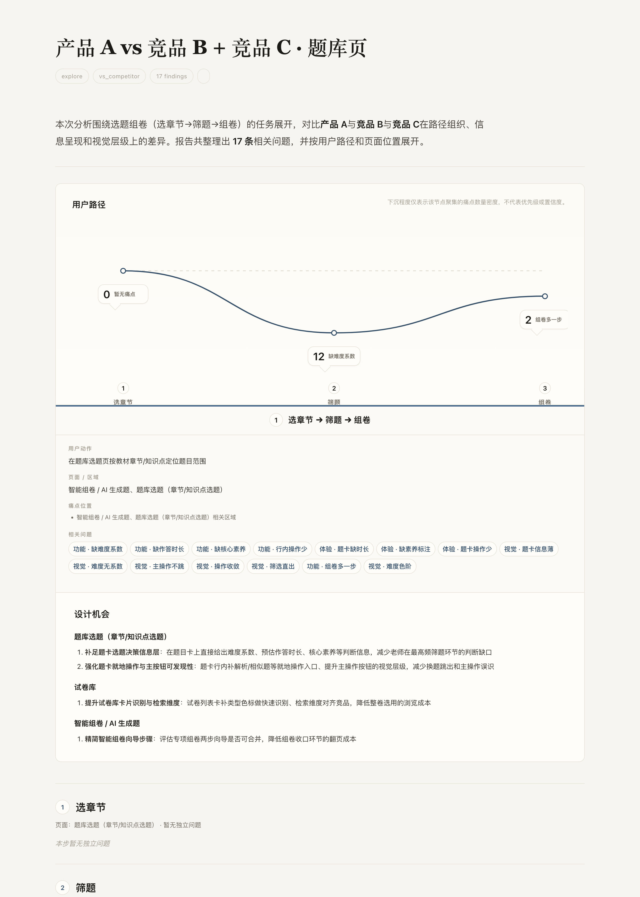
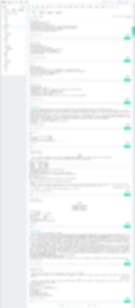
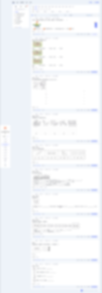

Evidence existed, but was hard to use.材料有了，但很难直接拿来判断。
Screenshots were collected as loose material, making it hard to trace a conclusion back to the exact product surface.很多截图只是堆在一起，等到写结论时，很难再说清它到底来自哪一个页面、哪一个路径。
AI organizes the research. People review the evidence. Only then does it become product judgment. AI 先整理研究材料，人再审查证据，最后才进入产品判断。

Designers and product managers spent too much time before a competitor analysis could become useful: clarifying the scope, collecting screenshots, grouping pages, writing findings, and repeatedly aligning on what the report should answer. The work was fragmented, conclusions often lacked a clear evidence chain, and different people produced reports in different structures. AI could reduce the repetitive work, but only if the output stayed reviewable. 在竞品分析过程中，团队大量时间消耗在分析正式开始之前：确认研究范围、收集截图、归类页面、整理发现，并将不同人的输出整合成一份可读报告。最初的目标是减少这些重复整理工作。但在真实运行中我发现，速度并不是唯一问题。如果结论无法追溯到证据，观察事实和设计推断混在一起，即使报告生成得更快，也很难被团队直接用于产品判断。
Screenshots were collected as loose material, making it hard to trace a conclusion back to the exact product surface.很多截图只是堆在一起，等到写结论时，很难再说清它到底来自哪一个页面、哪一个路径。
A fact can be cited directly; an inference needs judgment. The report had to separate them.我希望报告能把“截图里确实看到的内容”和“基于这些内容做出的判断”分开写清楚。
The team needed more time for product thinking and innovation, not screenshot sorting and report formatting.团队更需要讨论产品机会和方案取舍，而不是一直耗在截图整理和报告排版上。
Instead of relying on one large prompt, I split the task into stages. Agents handled capture and analysis, deterministic scripts guarded state and quality gates, and final judgment stayed with the human reviewer. 我没有继续依赖一个大型 prompt 生成整份报告，而是将一次竞品分析拆解为几个明确阶段：证据采集、任务路径提取、三视角分析、人工审查和报告生成。Agent 负责整理和初步分析，脚本负责状态记录与质量检查，人工负责确认哪些结论可以进入最终报告。这样的拆解让流程不再依赖一次性生成结果，而是让每一步都可以被追踪、检查和修正。
“Compare our question bank with two main competitors — focus on the teacher's select-chapter → filter → compose path, and find what we can improve.”“帮我对比我们产品和两家竞品的题库页，重点看老师从选章节、筛题到组卷这条路径，找出我们能改进的地方。”
I used Claude Code to orchestrate the workflow. Playwright handled evidence capture; three analysis lenses ran in parallel; review scripts handled deduplication, viewpoint rewrites, and quality gates. Agents produced the analysis, scripts guarded the process, and I defined the rules.这条流程是我用 Claude Code 搭起来的。Playwright 负责采集证据，Agent 从功能、体验、视觉三个角度做初步分析，脚本负责去重、改写视角和质量检查。哪些规则该守住、哪些地方必须人工确认，是我在过程中定义的。
状态落盘，不靠记忆。Durable state, not memory.
每个阶段把结构化状态写到磁盘，而不是留在模型上下文里——所以整轮分析可审计、可复现、可续跑，而不是一个只能从头重跑的黑盒。Every phase writes a typed record to disk instead of living in the model's context — so the run stays auditable, reproducible, and resumable, not a black box you re-run from scratch.
The design challenge was deciding what could be automated without giving up control. So I split the workflow into three layers — and drew a hard line at what AI is never allowed to decide. 真正的设计难点，是哪些能交给 AI、又不至于把控制权一起交出去。所以我把工作流拆成三层，并在“AI 绝不能替我决定”的地方划下硬边界。
Humans confirm the product context, judge priority, correct weak inferences, and decide what direction the product should take.业务背景、优先级、错误推断和最终产品方向，都不能交给 AI 自动决定。
Agents organize screenshots, group pages, merge similar issues, and produce first-pass findings across functional, experience, and visual lenses.Agent 适合做截图整理、页面归类、相似问题合并，以及从几个视角先生成一版发现。
The workflow blocks unchecked reports, flags missing evidence, merges duplicate findings, and keeps unfinished review states from reaching output.系统要做的是卡住风险：没审完的报告不能导出，证据不够要标出来，重复发现要合并，没闭环的问题不能混进最终报告。
The point was never full automation — it was controlled automation. AI takes the repetitive work; the judgment that decides what the product becomes stays with people.重点从来不是全自动，而是可控的自动化。重复的整理交给 AI，决定产品走向的判断，留在人手里。
Early on, the tool read “not seen in the current screenshots” as “the product doesn't have it.” A high-risk call — it can turn an evidence gap into a false competitor advantage. That is when I shifted the focus from speed to trust. 早期运行时，工具曾把“当前截图里没看到”解读成“产品没有这个功能”。这类判断风险很高——会把证据不足误写成竞品优势。就是从那时起，我把重点从“更快”转向“可信”。
A finding without evidence is not allowed to become a final report claim.没有证据支撑的发现，不能直接写进最终报告。
The tool separates what was observed from what the system inferred, so the reviewer knows how to use it.只有把事实和推断分开，审查者才知道哪些可以直接引用，哪些还需要再判断。
AI drafts findings; humans decide which findings are valid enough to enter the report.AI 可以先写发现，但哪些发现能进报告，必须由人确认。
Any high-risk “absent” claim stops here; the reviewer confirms which it is — actually present, truly absent, undecidable, or needs more screenshots — before it can reach the report.任何高风险的“缺失”判断都在这里停下，由审查者确认它属于 实际存在 / 确实不存在 / 无法判断 / 需要补图 哪一种，才能进入报告。
“The competitor has feature X.”“竞品有 X 功能。”
This describes the competitor, but the product team still has to translate what it means for us.这种写法只是在夸竞品，读者还得自己再翻译一遍：那我的产品到底该改什么？
“Our product lacks a clear path for X.”“我的产品在 X 场景缺少清晰路径。”
The finding is anchored back to the product decision: where we should improve and why.改写后，发现会回到自己的产品上：我们该改哪里，为什么值得改。
The first working versions exposed the same risks that make AI analysis hard to trust. I turned each risk into a check the report must pass before it can render — review is a gate inside the workflow, not cleanup after it. 最早能跑通的几版，暴露了让 AI 分析不可信的那些风险。我把每一种风险都变成报告渲染前必须通过的检查——审查不再是事后补救，而是工作流里的一道门禁。
没闭环，不出报告。Unresolved blocks the report.
每条 finding 都要先经人工逐条审查才能进报告；只要还有未闭环的，就回炉再审，直到全部闭环。Every finding must pass human review before it can enter the report; as long as one stays unresolved, the flow loops back for another round, until everything is closed.
一次真实运行的发现漏斗（run 20260617-094435）。这一轮很干净——20 条一次确认通过，没触发修改 / 补图 / 二次审查；上面那套回炉机制，是为不干净的运行准备的，这次没用上。Findings funnel from one real run (20260617-094435). A clean round — all 20 confirmed in one pass, no modify / re-shoot / second review triggered; the loop above is the design for messier runs, not exercised here.
审查通过后，一条 finding 长这样——它是上面这台状态机的产物，不是截图，按真实 run 原生重绘。This is what one reviewed finding looks like — the output of the state machine above, rebuilt natively from a real run.
Product A shows item difficulty only as a text tier like “Medium,” with no number. Competitor C places a difficulty coefficient “Medium (0.65)” next to the tier (0–1, higher = harder), letting teachers precisely arrange a paper's difficulty gradient — while Product A can only rely on estimation.产品 A 题卡的难度仅以「中」等文字档位呈现，无量化数值；竞品 C 在档位旁并列难度系数「中等(0.65)」（取值 0~1，数值越大越难）。该系数使教师能够精确编排整卷难度梯度，而产品 A 当前只能依赖经验估计。
Evidence证据

On the teacher's core path位于教师核心路径·medium gap差异中等·high frequency高频使用
Finding structure · native发现结构 · 原生重绘 Not a screenshot — the finding object is rebuilt natively from a real run (20260617-094435). Fields are fixed, so confidence, evidence source, and priority are readable without asking.不是截图——这条发现据真实运行（run 20260617-094435）原生重绘。字段固定，可信度、证据来源和优先级无需追问即可读出。
The tool did not make decisions for the team; it changed the quality of discussion around decisions. It is used by five people across an education product's web and teacher-app competitor analysis tasks, reduced setup clarification from roughly 5-10 rounds to 0-2 rounds, and turned scattered screenshots into evidence-backed reports. 这套工具并不替代团队的产品判断，而是提高了判断前的信息质量。团队讨论不再停留在“竞品体验更好”这类笼统判断，而是可以回到具体路径和证据，例如“在筛题这一步，竞品少了一层决策成本”。最终，AI 输出不再只是自动生成的总结，而是可以被审查、质疑和复用的分析材料。
Each version added a trust mechanism discovered through real runs.每一版都是在真实使用中发现问题后改出来的。
The initial clarification cost dropped from roughly 5-10 rounds.启动前追问从约 5-10 轮下降。
Findings are tied to evidence, uncertainty, and review state.每条发现都能看到证据、不确定点和审查状态。
Applied in an education product's web and teacher-app competitor analysis tasks as an early team workflow.作为早期组内工作流，已经用于某教育产品 Web 端和教师端 App 的竞品分析。
The tool did not replace product judgment; it helped calibrate it. The biggest change was discussion quality: instead of saying “the competitor experience is better,” we could point to a specific path and evidence, such as “in the question filtering step, the competitor exposes one fewer decision layer.”它没有替代产品判断，但让判断更具体。以前讨论容易停在“竞品体验更好”，现在可以回到路径和证据，比如“在筛题这一步，竞品少了一层决策成本”。
Screenshots come from a real product-compare run; product names are anonymized (Product A / Competitor B / C). The compared facts are publicly observable; the case demonstrates how the AI workflow is controlled, not internal product data.案例截图来自 product-compare 的真实运行，产品名称已做匿名化处理（产品 A / 竞品 B / C）。所呈现的对比事实均为公开可观察内容，案例展示的是我如何控制 AI 工作流，而非内部产品数据。
这个项目真正解决的，不是让 AI 产出更多，而是让它的输出经得起审查与质疑，最终能支撑人的决策。The real problem was not making AI produce more — it was making its output withstand review and scrutiny, so people can rely on it in decisions.